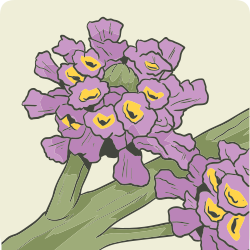
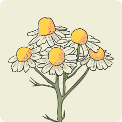
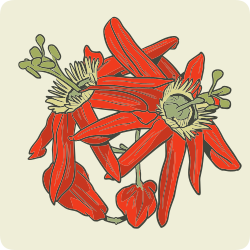

Diferentemente daqueles que têm um apetite aumentado, os pacientes deste grupo respondem a fitoterápicos que reduzem a ansiedade e melhoram o humor, ligando-se ao receptor do ácido gama-aminobutírico (GABA) e, muitas vezes, regulando o cortisol.
São pacientes que têm comportamento de “beliscar” ao longo do dia, e o estresse faz com que comam mais. Além disso, esses pacientes costumam ter dificuldade para começar ou manter o sono, o que dificulta o processo de redução de peso. Exemplos de plantas medicinais com ação ansiolítica:

Melissa officinalis (Lamiaceae)
(melissa)

Matricaria chamomilla (Asteraceae)
(camomila)

Passiflora spp. (Passifloraceae)
(maracujá)